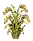
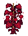
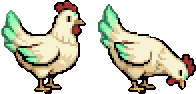
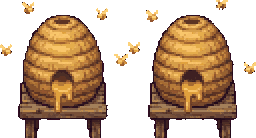
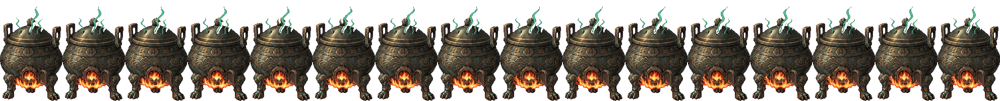
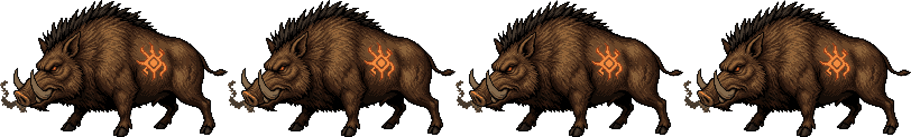
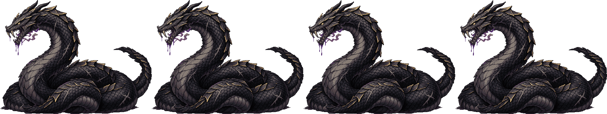

Cách chơi
Game không dùng giờ thật. Bạn không phải canh điện thoại, cây không héo khi bạn vắng mặt. Mọi thứ tính theo ngày trong game và điểm hành động.
Một ngày của Lục Thanh
Mỗi sáng bạn có 10 điểm hành động (ĐH), hiện bằng 10 nén nhang trong bát hương. Mỗi việc tốn một số nén. Hết nhang thì về nhà ngủ, sáng hôm sau đủ lại 10.
| Việc | ĐH |
|---|---|
| Tưới cả vườn (một lần cho mọi ô) | 1 |
| Gieo hạt (cả lượt gieo) | 1 |
| Cho cả chuồng ăn | 1 |
| Hái thảo dược ở Khe Núi | 1 |
| Luyện một mẻ đan | 2 |
| Vào ải Bìa Rừng | 3 |
| Vào Rừng Sâu, Hang Hắc Xà | 4 |
| Thu hoạch, mua bán, nói chuyện, đi lại | 0 |
- Đi ngủ: chạm giường ở nhà. Ngủ là lưu game. Muốn ngủ sớm thì phải dùng ít nhất 3 ĐH trong ngày, hoặc không còn việc gì tốn ĐH để làm.
- Đêm qua: cây đã tưới lớn thêm một ngày, đan trong lò chín, gà đã ăn thì sáng ra có trứng. Bảng tổng kết đêm kể lại hết.
- Tin trong thôn: Lão Tiền bán hạt hiếm ghé quảng trường mỗi 7 ngày, ở lại một ngày. Bảng Nhờ Vả có 2 đơn mỗi ngày.
Mẹo ngày đầu: làm việc rẻ trước (tưới, gieo, cho ăn), rồi mới dồn số nén còn lại vào ải. Ải tốn nhiều nhưng cho tu vi, thứ vườn không cho được.
Vườn dược và chăn nuôi
- Gieo và tưới: chạm ô trống để chọn hạt. Tưới một lần là cả vườn. Ô không tưới thì cây đứng yên, không chết.
- Thu hoạch: không tốn ĐH. Mỗi ô cho 2 cây, có ba phẩm chất Thường, Tốt, Cực Phẩm. Phẩm chất cao giúp luyện đan dễ thành và đan mạnh hơn.
- Đất: Linh thổ (100 Linh Thạch một ô) cho thêm 1 cây mỗi lần thu và tăng tỉ lệ phẩm cao. Chỉ đổi được khi ô trống.
- Phân Yêu Cốt Phấn: rơi từ Heo Rừng hoặc nhặt trong khe đá. Bón một ô để tăng phẩm chất lần thu kế tiếp.
- Mở rộng vườn: 4×4 lên 6×6 giá 800 Linh Thạch, lên 8×8 giá 2.500. Không cần mua chương.

Linh Dịch
Hồ Lô ngưng một giọt Linh Dịch mỗi 3 ngày, giữ tối đa 3 giọt. Nhỏ lên một ô cây: cây lớn ngay thêm một ngày và lên một bậc phẩm chất. Nhỏ lên vật nuôi: ra sản phẩm ngay trong ngày.
Giọt đầy 3 rồi thì nên dùng bớt, để lâu không ngưng thêm.
| Cây chương 1 | Ngày lớn | Giá hạt | Mua hạt ở | Dùng để |
|---|---|---|---|---|
 Linh Cốc | 1 | 1 | Tạp hoá bà Lý | Thức ăn cho vật nuôi |
Thanh Linh Thảo | 2 | 3 | Tạp hoá, hái ở Khe Núi | Hồi Khí Đan, Giải Độc Đan |
Hồng Diệp Hoa | 3 | 5 | Tạp hoá | Hồi Huyết Đan, hoa nuôi ong |
Bạch Ngọc Sâm | 4 | 8 | Tạp hoá | Tăng Lực Đan, Đột Phá Đan |
 Huyết Tâm Đằng | 4 | 40 | Cốt truyện, Lão Tiền | Giải Độc Đan |
Chuồng trong Hồ Lô
Mở sau nhiệm vụ con gà của Tiểu Hoa. Cho cả chuồng ăn tốn 1 ĐH, mỗi con ăn 1 Linh Cốc. Không cho ăn thì không có sản phẩm, vật nuôi không chết và không bỏ đi.

Linh Kê
Đẻ trứng mỗi ngày. Trứng bỏ vào lò làm phụ gia: mẻ đan ra thêm 1 viên.
Giá 150 Linh Thạch
Ngọc Thố
Cho Ngọc Nhung mỗi 3 ngày, nguyên liệu nâng cấp lò đan.
Giá 300 Linh Thạch

Linh Phong
Không cần cho ăn, nhưng cần ít nhất 4 ô Hồng Diệp Hoa đang lớn. Cho Linh Mật mỗi 2 ngày: phụ gia tăng 15% tỉ lệ thành đan.
Giá 250 Linh Thạch
Luyện đan và đột phá
- Cách luyện: vào Đan Phòng trong Hồ Lô, chọn đan phương, đặt nguyên liệu, thêm tối đa 1 phụ gia. Tốn 2 ĐH. Đan xong vào sáng hôm sau.
- Mỗi mẻ ra 2 viên, thêm trứng Linh Kê thì 3 viên.
- Tỉ lệ thành: 70% gốc. Mỗi nguyên liệu Tốt cộng 5%, Cực Phẩm cộng 10%. Linh Mật cộng 15%. Lò cấp 2 cộng 10%. Tối đa 95%.
- Hỏng đan mất một nửa nguyên liệu. Nửa còn lại trả về túi.
- Phẩm chất đan lấy theo nguyên liệu kém nhất. Đan Tốt mạnh ×1,3, Cực Phẩm ×1,6.

| Đan | Nguyên liệu | Tác dụng (phẩm Thường) |
|---|---|---|
Hồi Khí Đan | Thanh Linh Thảo ×2 | Hồi 40 linh lực |
Hồi Huyết Đan | Hồng Diệp Hoa ×2 | Hồi 60 HP |
Giải Độc Đan | Thanh Linh Thảo + Huyết Tâm Đằng | Giải độc, miễn độc 3 lượt |
Tăng Lực Đan | Bạch Ngọc Sâm ×2 | Sát thương +30% trong 3 lượt |
Đột Phá Đan | Bạch Ngọc Sâm + Yêu Đan cấp 1 | Điều kiện đột phá tầng 3 lên 4 |
Cảnh giới Luyện Khí
Tu vi đến từ yêu thú bạn hạ trong ải, rót đầy dần chiếc hồ lô tu vi. Đủ tu vi thì bế quan đột phá lên tầng kế.
Mỗi tầng cộng +20 HP, +10 linh lực, +3 công, +2 thủ, +1 tốc.

| Tầng | Tu vi cần | Điều kiện thêm |
|---|---|---|
| Luyện Khí 1 → 2 | 100 | Mở Hỏa Cầu Thuật, Rừng Sâu |
| Luyện Khí 2 → 3 | 200 | – |
| Luyện Khí 3 → 4 | 350 | Đột Phá Đan + công pháp tông môn (chương 2) |
Chiến đấu
- Mỗi lượt chọn một trong năm: Tấn công, Kỹ năng, Dùng đan, Phòng thủ, Bỏ chạy. Ai tốc cao hơn ra đòn trước.
- Phòng thủ giảm một nửa sát thương nhận trong lượt và hồi 5 linh lực.
- Túi đan: trước khi vào ải chọn tối đa 3 loại đan mang theo.
- Một lượt ải gồm 4 đến 6 trận liền. HP và linh lực không hồi giữa các trận, chỉ hồi bằng đan. Sau mỗi trận chọn Đi tiếp hoặc Rút về (giữ đồ đã nhặt).
- Thua thì về nhà, giữ tu vi đã nhận, mất nguyên liệu nhặt trong lượt đó.
- Tự đánh và tốc độ ×2 có trong nút tạm dừng ☰.
Ngũ hành: Kim khắc Mộc, Mộc khắc Thổ, Thổ khắc Thủy, Thủy khắc Hỏa, Hỏa khắc Kim.
Đánh vào hệ mình khắc: sát thương +50%. Đánh vào hệ khắc mình: −25%.
Chương 1 bạn có Linh Khí Chưởng (không hệ, 8 linh lực) từ đầu và Hỏa Cầu Thuật (hệ Hỏa, 12 linh lực) ở Luyện Khí 2.
Sói Rừng
Mộc Tốc cao, đi bầy 2–3 con. Hạ con yếu trước.
Nhện Độc
Thủy Phun độc. Đừng dùng Hỏa Cầu, bị giảm 25%.
Rắn Núi
Kim Thủ cao, sợ lửa. Hỏa Cầu +50%.

Heo Rừng Linh Hóa
Thổ Trâu nhưng chậm. Có khi rơi Yêu Cốt Phấn, hiếm khi rơi Yêu Đan.

Hắc Lân Xà
Mạc lão khuyên vào hang khi đã Luyện Khí 3, mang theo 3 Giải Độc Đan và 3 Hồi Huyết Đan.
- Khi hiện dòng “Hắc Lân Xà đang cuộn mình tụ độc…”, uống Giải Độc Đan ngay. Lượt sau nó phun độc mất 15 HP mỗi lượt trong 4 lượt.
- Dưới 40% HP, vảy nó dựng lên, thủ tăng gấp đôi trong 2 lượt. Phòng thủ hoặc hồi máu, vì sau đó là Quật Đuôi rất đau.
- Hỏa Cầu Thuật khắc Kim, gây thêm 50% sát thương.
Thua boss thì lần sau vào hang được đi thẳng tới phòng cuối.